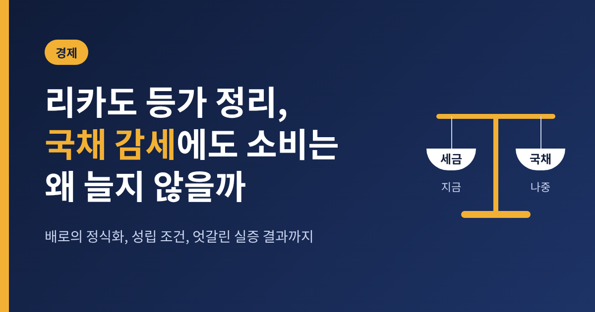
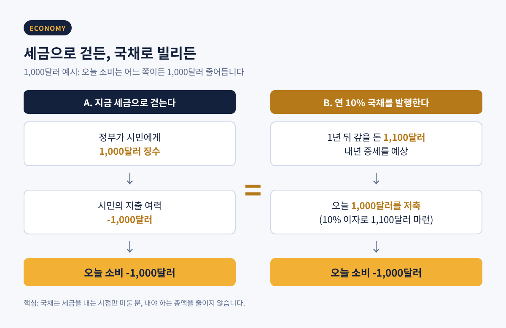
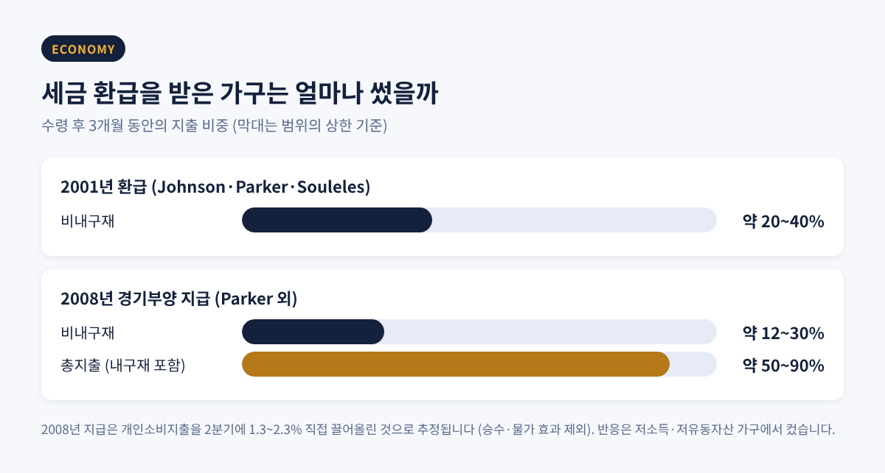
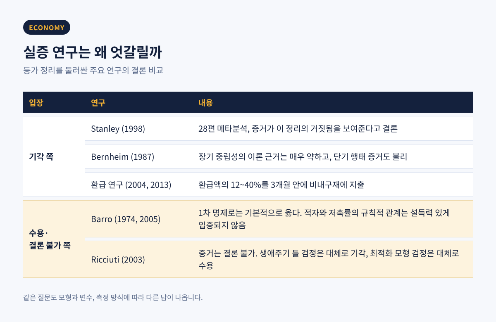

오늘은 리카도 등가 정리에 대해 이야기해 보려 합니다.
국채를 발행해 세금을 깎아주면 소비가 늘 것 같지만, 이 이론은 사람들이 그 돈을 쓰지 않고 모아 둔다고 말합니다.
왜 그렇게 되는지, 어떤 조건이 필요한지, 현실의 자료는 무엇을 보여주는지 차례로 정리하겠습니다.
핵심만 먼저 적으면 이렇습니다. 국채는 미룬 세금이라서 감세의 효과가 상쇄된다는 것이 이론의 요지이고, 실증 연구는 대체로 이 이론에 불리하지만 결론이 하나로 모이지는 않았습니다.
정부가 쓸 돈이 필요하다고 해 보겠습니다. 재원을 마련하는 길은 두 가지입니다.
지금 세금으로 걷거나, 국채를 발행해 빌린 뒤 나중에 세금으로 갚거나.
리카도 등가 정리는 정부지출의 규모가 정해져 있다면 이 두 방법의 경제적 결과가 같다고 봅니다.
국채를 발행해도 갚을 사람은 결국 국민입니다. 세금을 내는 시점만 바뀔 뿐, 내야 하는 총액은 줄지 않습니다.
교육용 사례로 자주 쓰이는 숫자 예시가 있습니다. 정부가 1,000달러가 필요하다고 가정합니다.
지금 세금으로 걷으면 시민의 지출 여력이 1,000달러 줄어듭니다.
연 10% 이자의 국채로 빌리면 1년 뒤 1,100달러를 갚아야 하고, 시민들은 내년 세금이 1,100달러 오를 것이라 예상합니다.
그래서 오늘 1,000달러를 10% 이자로 저축해 둡니다. 내년에 1,100달러가 되어 세금을 낼 수 있기 때문입니다.
결과는 같습니다. 어느 쪽이든 오늘 소비는 1,000달러 줄어듭니다.

이 논리를 감세에 적용하면 이렇습니다.
정부가 국채를 발행해 세금을 깎아주면 가계의 손에 돈이 들어옵니다. 그러나 합리적인 가계는 그 돈이 미래 증세로 돌아올 것을 압니다.
그래서 쓰지 않고 저축합니다. 민간 저축이 정부의 저축 감소분을 그대로 메우기 때문에 총수요도, 이자율도 달라지지 않습니다.
이 발상의 뿌리는 19세기로 거슬러 올라갑니다.
데이비드 리카도는 1820년 「자금조달 제도에 관한 에세이」에서 2,000만 파운드의 전쟁 비용을 세금으로 걷든, 매년 100만 파운드(연 5%)의 이자를 내는 국채로 조달하든 실질적으로 같다고 설명했습니다.
다만 리카도 자신이 이를 현실의 이야기로 믿지는 않았습니다. 사람들이 미래 세금을 근시안적으로 보기 때문입니다.
이 오래된 생각을 현대 경제학의 언어로 정식화한 사람이 로버트 배로입니다.
1974년 「Journal of Political Economy」에 실린 논문 「정부 채권은 순자산인가?」가 그 출발점입니다.
배로가 던진 질문은 단순했습니다. 가계는 정부 채권을 자기 재산이 늘어난 것으로 느끼는가.
채권이 순자산이 되려면 채권의 가치가 그것을 갚기 위한 미래 세금의 현재가치보다 커야 합니다.
배로는 그렇지 않다고 보았습니다.
그의 모형은 중첩세대 모형입니다. 사람은 두 기간을 삽니다. 젊을 때 일하고, 직계 자손에게 유산을 남깁니다.
효용에는 자기 소비뿐 아니라 자손이 누릴 수 있는 효용도 들어갑니다.
국채는 미래 세대에게 부과되는 정액세로 상환됩니다.
부모가 이런 마음을 가졌다면 어떻게 될까요.
자손에게 돌아갈 세금이 늘어난 만큼 유산을 늘려 상쇄합니다. 그러면 소비도, 이자율도, 총수요도 변하지 않습니다.
배로의 표현을 빌리면, 세대가 실제로 작동하는 이전으로 연결되어 있을 때 현재 세대는 "사실상 무한히 사는 것처럼" 행동합니다.
그래서 사람의 수명이 유한하다는 사실만으로는 국채가 부로 느껴지는 효과가 생기지 않는다는 결론이 나옵니다.
배로의 결론은 조심스러웠습니다. 정부부채를 순자산으로 볼 설득력 있는 이론적 근거가 없다는 것이었고, 부(負)의 효과도 정(正)의 효과만큼 그럴듯하다는 것이었습니다.
훗날 그는 이 정리가 정부지출이 중요하지 않다는 주장이 아니라, 정해진 지출을 어떻게 조달하느냐에 관한 명제라고 설명했습니다.
2005년 인터뷰에서는 "1차 명제로는 기본적으로 옳다"고도 말했습니다.
이론이 맞으려면 현실이 몇 가지 전제를 충족해야 합니다. 핵심은 세 가지입니다.
첫째는 합리적 기대입니다.
국채 발행이 곧 미래 증세라는 사실을 사람들이 알아채고, 그에 맞춰 행동해야 합니다. 한 교육 칼럼은 이를 가장 취약한 가정이라고 평했습니다.
리카도가 이 이론을 의심한 이유도 바로 여기에 있습니다.
둘째는 유동성 제약이 없어야 한다는 점입니다.
모든 사람이 정부와 같은 금리로 자유롭게 빌리고 저축할 수 있어야 합니다.
당장 현금이 부족한 가계는 감세로 생긴 돈을 미래를 위해 쌓아 두기보다 지금의 필요에 씁니다. 평생 소득을 놓고 소비를 매끄럽게 조절한다는 전제가 흔들리는 순간입니다.
셋째는 세대 간 연결된 이타심입니다.
내가 세상을 떠난 뒤에 갚을 세금까지 유산으로 미리 막아 둘 만큼 자손을 아껴야 합니다.
배로의 모형에서도 유산이 영(0)인 경우, 곧 유산을 남기지 않는 가계에서는 결과가 무너집니다.
여기에 몇 가지가 더 붙습니다. 정부지출의 경로가 고정되어 있어야 하고, 세금은 행동을 왜곡하지 않는 정액세여야 합니다.
배로 본인도 1974년 논문에서 한계를 적었습니다. 정부가 민간보다 더 효율적으로 대출한다면 국채는 순자산을 늘리고, 미래 세 부담이 사람마다 불확실하면 가계의 위험이 커져 효과가 달라질 수 있다는 것입니다.
그렇다면 실제 가계는 어떻게 움직였을까요. 가장 직접적인 자료는 미국의 세금 환급 연구입니다.
2001년 미국은 세금 환급을 지급했습니다. 존슨, 파커, 술레스의 연구에 따르면 가구들은 환급을 받은 석 달 동안 환급액의 약 20~40%를 비내구재에 썼고, 이후 석 달 동안 약 3분의 1을 더 썼습니다.
반응이 가장 큰 쪽은 유동자산이 적고 소득이 낮은 가구였습니다. 유동성 제약이라는 설명과 맞아떨어지는 대목입니다.
2008년에는 약 1억 3천만 명의 납세자에게 1,000억 달러 규모의 지급이 있었습니다. 개인 300~600달러, 부부 600~1,200달러에 자녀당 300달러였습니다.
파커 등의 연구는 지급 시기가 무작위로 갈린 점을 이용해 더 정밀하게 추정했습니다.
수령 후 석 달 동안 비내구재에 12~30%를 썼고, 자동차 같은 내구재까지 합치면 지급액의 50~90%를 썼습니다.
이 지급은 2008년 2분기 개인소비지출을 1.3~2.3% 끌어올린 것으로 추정됩니다. 승수 효과와 물가 효과는 뺀 숫자입니다.
흥미로운 점도 있습니다. 대부분을 저축했다고 답한 사람들조차 통계적으로 유의한 지출을 했습니다. 자기 보고만으로는 실제 지출이 과소평가될 수 있다는 뜻입니다.

이 숫자들은 리카도적 예측과 거리가 있습니다. 감세를 곧 미래 세금으로 읽는 가계라면 이렇게 쓰지 않았을 것입니다.
카플란과 비올란테의 강의 자료는 미국 가구의 약 3분의 1을 "자산은 있지만 사실상 현금이 부족한" 가구로 분류합니다. 2001년 소비자금융조사를 바탕으로 한 수치입니다. 이런 가구가 많을수록 유동성 제약이 현실에서 힘을 쓰게 됩니다.
다만 해석에는 조심할 점이 있습니다.
이 연구들이 본 것은 일시적이고 소액인 환급에 대한 반응입니다. 국채를 대규모로 발행해 장기간 이어지는 감세 전체를 곧바로 반증한다고 말하기는 어렵습니다.
더 넓게 보면 연구 결과는 한쪽으로 모이지 않습니다.
기각 쪽의 근거부터 보겠습니다.
스탠리는 1998년 28편의 실증 연구를 묶어 메타분석을 했고, 증거가 이 정리의 거짓됨을 보여주는 설득력 있는 증언이라고 결론 내렸습니다.
버냄은 1987년 논문에서 장기 중립성의 이론적 근거가 "극히 약하다"고 썼습니다. 단기 행태 증거도 리카도 견해에 불리하며, 적자는 현재 소비에 큰 영향을 주고 이자율을 올릴 가능성이 크다는 것이 그의 결론이었습니다.
미국 레이건 정부 시기의 자료도 자주 인용됩니다. 정부 수입이 잠재 GNP의 10.01%(1976~80년)에서 8.86%(1981~85년)로 줄었고, 조정된 재정적자는 1981~86년에 2.56%로 1958~1986년 가운데 가장 컸습니다.
등가 정리가 맞다면 민간 저축이 늘었어야 합니다. 실제로는 GNP 대비 순민간저축이 8.55%에서 7.47%로 줄었고, 소비는 62.96%에서 64.72%로 늘었습니다.
반대편의 목소리도 있습니다.
리치우티가 2003년 쓴 서베이는 실증 증거를 "결론이 나지 않았다"고 평가합니다. 생애주기 틀에서 한 검정은 대체로 이론을 기각하지만, 최적화 모형에 기반한 검정은 대체로 수용한다고 정리합니다.
배로 본인도 적자나 부채와 국민저축률 사이에 규칙적인 관계를 보인 연구가 설득력 있게 나오지 않았다고 짚습니다. 적자가 저축을 줄인다는 주장은 "주로 반복에 의한 증명"이라는 것입니다.
결과가 엇갈리는 이유의 하나는 측정의 어려움입니다.
버냄도 집계 자료로 적자의 효과를 직접 재려는 시도에는 넘기 어려운 문제가 있다고 보았습니다. 연구마다 모형과 변수가 다르니, 같은 현실을 두고도 다른 답이 나올 수 있습니다.
기대의 측면에서는 이런 조사도 있습니다. 키프로스 중앙은행이 2018년 실시한 설문에서 정부지출이 영구히 늘면 세금이 오를 것으로 예상한다는 응답이 약 85%였고, 그렇지 않다는 응답은 약 12%였습니다.
미래 증세를 내다보는 사람이 많다는 뜻입니다. 그러나 증세를 예상한다는 것과 지금 소비를 줄인다는 것은 별개의 문제이므로, 이 결과를 이론의 증명으로 읽을 수는 없습니다.

정리하면 이렇습니다.
리카도 등가 정리는 현실을 그대로 그린 그림이 아닙니다. 합리적 기대, 유동성 제약 없음, 세대 연결 이타심이라는 전제 위에 세워진 비교 기준입니다.
그리고 환급 연구가 보여주듯, 현실의 가계는 이 전제에서 꽤 멀리 있습니다. 돈이 급한 가구는 받은 돈을 씁니다.
그렇다고 이론이 쓸모없는 것은 아닙니다.
이 정리는 국채 발행이 공짜 점심이 아니라는 사실을 일깨워 줍니다. 지금 줄어든 세금은 어딘가에서 다시 청구됩니다.
감세와 재정적자의 효과를 따질 때 "누가, 언제, 얼마를 부담하는가"를 묻게 만든다는 점에서 이 이론은 여전히 유용한 질문지입니다.
결국 남는 것은 하나입니다. 등가 정리가 틀렸는지가 아니라, 얼마나 어긋나는지를 묻는 것이 올바른 질문이라는 점입니다.
국채로 감세를 하면 소비가 늘까요. 사람에 따라, 상황에 따라 다르다는 답이 가장 정직할 것입니다.
이 글은 투자나 정책 판단을 권유하는 글이 아니며, 이론과 연구 결과를 정리한 것입니다.